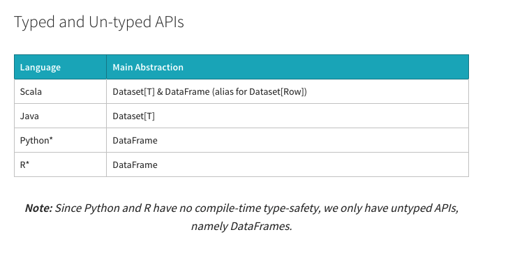

Apache Spark Dataframes vs Datasets
Apache Spark Provides
Resilient Distributed Dataset (since Spark 1.x)
DataFrames = Dataset[Row] (since Spark 2.x)
Datasets (since Spark 2.x)

RDD vs Datasets
Both RDD and Dataset use case classes
Why should i use Dataset?
https://jaceklaskowski.gitbooks.io/mastering-spark-sql/spark-sql-dataset-rdd.html
Dataset API vs SQL
https://jaceklaskowski.gitbooks.io/mastering-spark-sql/spark-sql-dataset-vs-sql.html